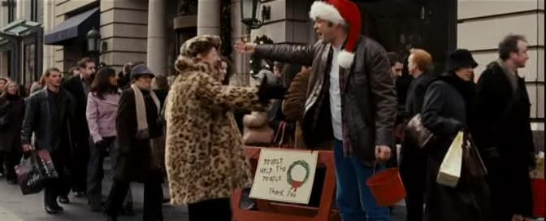

Key For Two - Opening Night!
Greetings Fans! Tonight is opening night for Key For Two at the Riverfront Playhouse. I had the pleasure of seeing the show last night at their final rehearsal, and I thought it was excellent! As with all British…
Key ... Not Tea
... Press Release, as posted on the Riverfront Playhouse web site ... [missing image] RiverfrontPlayhouse.jpg original:…
New Year, and a New Play
Happy New Year, fans! I hope everyone had an enjoyable and relaxing holiday, and here's to a prosperous 2009! To start out the new year, Carol will be starting with a new play, Key for Two, by John Chapman and Dave…

Still Photos Stills
Greetings Fans, As you may recall, back in June, Carol portrayed a 78-year old grandmother in the Point of Contention production of Still Photos. I have posted some photos from the show in previous posts, but the…

A Dark Knight Moment
... and one more, while we're at it. As you may have seen mentioned elsewhere on this site, both Carol and I also worked on The Dark Knight. In a cruel irony, I was clearly visible in one scene for almost 30 seconds…

Fred Claus: Revisited
A belated Happy Thanksgiving to all the fans out there! Please excuse the extreme gap between posts. Carol has been busy working various product promotions, preparing a fabulous Thanksgiving dinner, and various…

Bits of Dodgeville
Greetings fans! As you may have read on this very site, Carol appeared as Emma Sweet in the pilot episode of Dodgeville. Last month, we had the pleasure of seeing the final cut at the premiere cast party! Now, for your…
Table and Chairs II: Duets
Hello Fans! In these hard economic times, budgets are tight and many are cutting back on non-essential expenses. But who can put a price on quality entertainment?! And at only $10 for 10 plays, Table & Chairs II: Duets…
Murder at the Arcada Casino -- revisited
Hello Fans! Back in March, Carol worked with MurdersRUs, and appeared in an improvisational murder/mystery called Murder at the Arcada Casino. In addition to the actual stage performance, the entire concept is being…

A Near Tragedy
Greetings Fans, While relaxing on a recent vacation (long weekend) in Hot Springs, AR [by the way... while Hot Springs is beautiful... I do not recommend driving from Chicago], the entertainment world nearly lost one of…